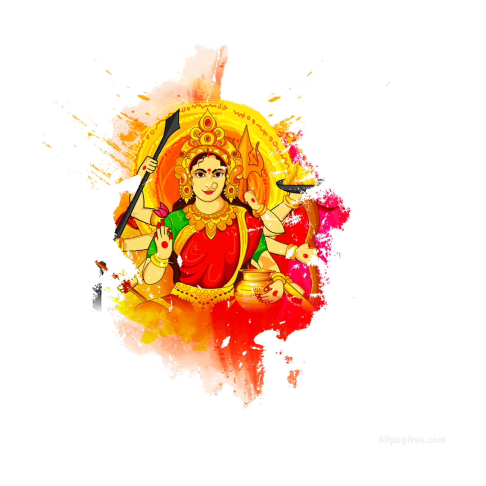

Durga Puja - Worship of Goddess Durga

What is Durga Puja?
Why Perform Durga Puja?
Benefits
How to Perform
Conclusion
Durga Puja: Worship of Goddess Durga
Durga Puja is a sacred Hindu ritual dedicated to Goddess Durga, the embodiment of strength, power, and protection. This puja is performed to seek her blessings for overcoming challenges, removing obstacles, and gaining victory over evil forces.
What is Durga Puja?
Durga Puja is a significant Hindu festival that honors Goddess Durga, the divine feminine force of strength and protection. She is often depicted riding a lion, holding weapons to fight against evil forces. Durga Puja is performed to invoke her blessings for strength, protection, and victory over all adversities.
Why Do We Perform Durga Puja?
- Victory over Evil: Durga Puja is performed to invoke Goddess Durga's strength to protect oneself from negative energies and evil forces.
- Overcoming Challenges: The puja is a way to gain strength to overcome personal and professional challenges in life.
- Spiritual Growth: Worshipping Goddess Durga helps devotees grow spiritually, focusing on inner strength and peace.
- Protection: Goddess Durga is known to offer protection from harm and danger, ensuring the safety of her devotees.
- Celebrating the Feminine Divine: Durga Puja honors the feminine aspect of divinity and the power of women as the nurturers and protectors of society.
Benefits of Durga Puja
- Strength and Courage: Durga Puja is believed to imbue devotees with physical and mental strength to face difficulties in life.
- Victory over Obstacles: The puja helps remove any obstacles or negative influences, bringing success and positive energy into one's life.
- Protection: Goddess Durga offers her devotees protection from enemies, illness, and other harmful forces.
- Spiritual Fulfillment: Performing the puja brings spiritual fulfillment, enhancing peace, happiness, and joy in life.
- Restores Harmony: The puja is believed to restore balance and harmony, both within oneself and in the family or community.
How to Perform Durga Puja (Step-by-Step)
Durga Puja is commonly performed during the Navratri festival, which spans nine nights, and is especially auspicious during the last day, Vijaya Dashami. Here’s how to perform the puja:
- Preparation: Cleanse the space or altar and place an image or idol of Goddess Durga. Offer flowers, incense, a lamp (preferably ghee), and fruits or sweets.
- Cleanse Yourself: Take a bath and wear clean clothes, preferably in colors like red, yellow, or orange, which are associated with strength and energy.
- Offer Flowers and Incense: Offer fresh flowers to Goddess Durga, light incense to purify the space and create a spiritual atmosphere.
- Chant Durga Mantras: Recite powerful Durga mantras like "Om Dum Durgayei Namah" or "Jai Durga Ma" to invoke her blessings.
- Offer Prayers: Pray for strength, courage, and the removal of all obstacles in life.
- Conclude the Puja: Perform the Aarti (lighting a lamp and moving it in a circular motion) while chanting mantras to honor Goddess Durga.
- Prasad (Offering): Offer prasad such as sweets, fruits, or coins to Goddess Durga and distribute it among family or devotees.
- Regular Practice: Regularly performing Durga Puja, especially during Navratri, brings divine blessings for protection and success.
Conclusion
Durga Puja is a powerful ritual that connects devotees with the divine energy of Goddess Durga. By performing the puja, one can gain strength, overcome challenges, and be protected from negative forces, ensuring a life of peace, prosperity, and spiritual growth.